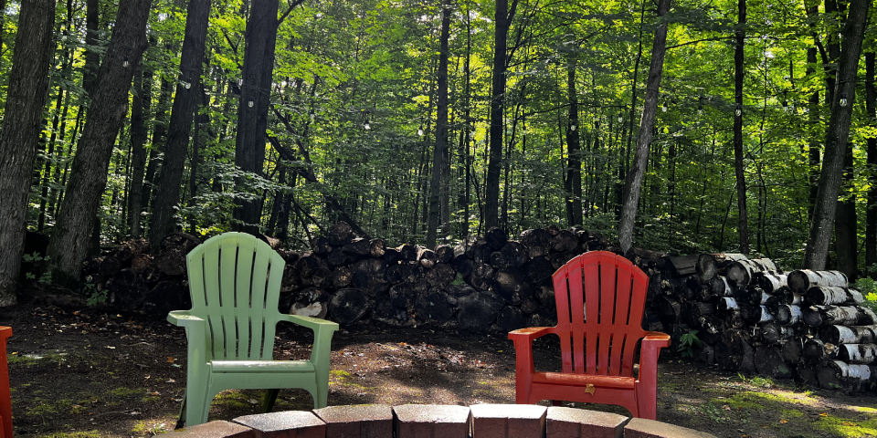
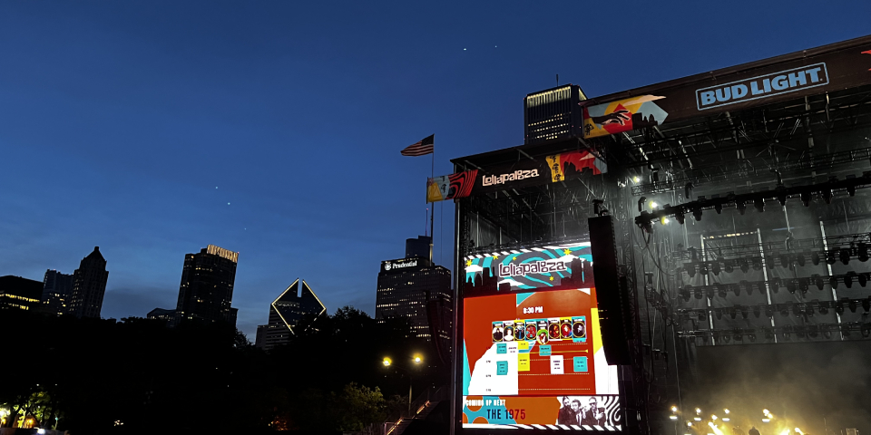
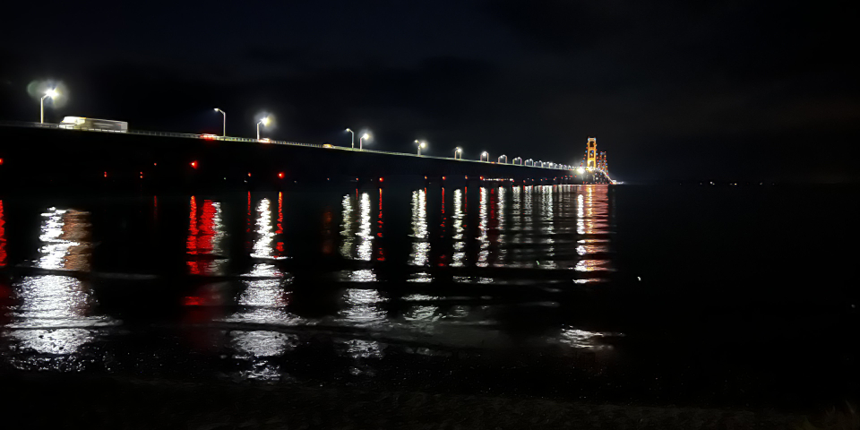
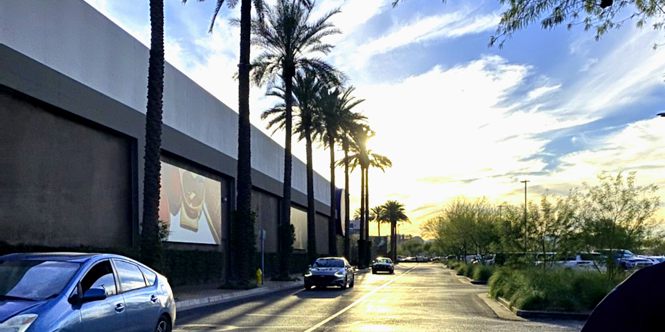
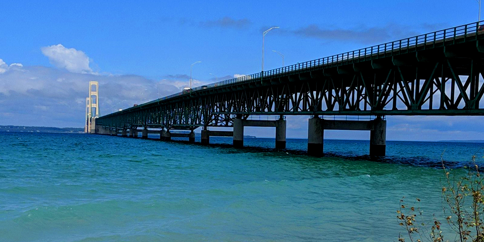
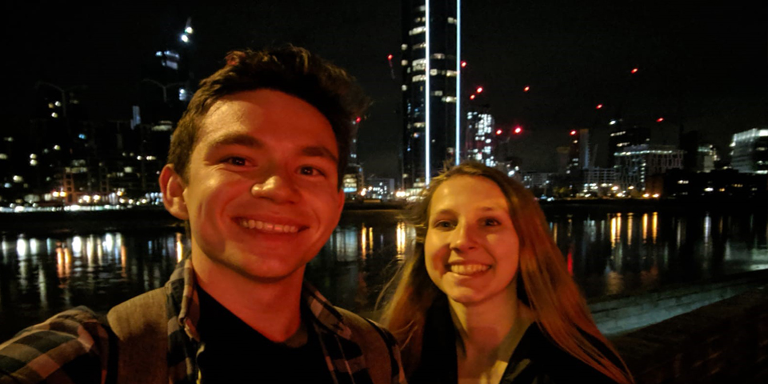

Projects
My previous and current projects with a bit of context and a relevant visual.
Resume Builder

My first dive into CSS and Javascript, I'm working on a resume builder that can use different company themes to construct personalized documents.
Auction Notification Script
I wrote a script in Python that calls the backend API for ShopGoodWill and notifies me via email about new listings relevant to the search queries I've defined. It runs every couple hours on a Raspberry Pi and keeps a set of item ids to prevent repeat items from being sent in the emails.
Smart Apartment

After graduation, I got my own place in downtown Detroit. Outside of the typical first solo apartment decorating, I decided to make my space as smart as possible. Right now there are a total of 4 smart speakers, 8 LED light strips, and about a dozen smart switches controlling various devices in my apartment. Future plans include setting up a local MQTT network to move some of these devices off the wifi and creating a custom dashboard on an old tablet.
Secure File Server

The last project of my operating systems course (and my collegiate career) was a multi-threaded, secure network file server. The file server had a hierarchical file system that could contain files and directories and provided an excellent challenge in socket communications and data security.
Virtual Memory Pager
My project team for EECS 482 (Operating Systems) and I implemented a pager as part of the system's kernel to manage the virtual address spaces of processes. The main aspects of the project included support for swap backed pages, file backed pages, and moving pages in and out of physical memory for read/write commands.
Thread Library

For my upper level operating systems course, my project group and I implemented a thread library for use on a single CPU system. The main components/objects of the library were the threads, mutexes, and condition variables (CVs).
EECS Bullpen Website

The Bullpen is an office in the Electrical Engineering and Computer Science building that houses many engineering student organizations such as the Institute for Electrical and Electronics Engineers (IEEE), the Society for Women Engineers (SWE), and others. In order to promote collaboration and better coordinate the various organizations' use of the space, the president of IEEE asked me to create a website for reserving the bullpen and keeping a live calendar of events. The latest version of the website can be found here.
Disk Scheduler
For my upper level operating systems course, the first project involved writing a multithreaded program that could handle and service disk requests from multiple sources. An example output from the program is shown in the picture above.
Personal Website

This website has been a fun learning experience since I started with very little experience in HTML, JS, or CSS. I started with a template from html5up.net (there are more details in the webpages' source code) and began digging through the code to modify things and make it fit my own style. The picture above depicts the old website compared to the remodeled version.
Catanalyzer
Catanalyzer was our final project for my upper level computer vision course. The purpose was to use both deep learning and classic computer vision algorithms to analyze the state of a Settlers of Catan board from live video input and then overlay valuable information onto the video feed. This was intended as a fun supplement for experienced Catan players or a resource for new players.
Diag Defender

The Diag Defender was the final project for our embedded systems lab. It used a PixyCam mounted on the front to detect colorful objects and move the motors to chase them out of the area surrounding a block M on the ground. It also used another PixyCam with an IR sensor attachment to keep track of IR LEDs mounted on the ceiling and stay within its predetermined bounds.
Mcity Video Processor

My work at Mcity has primarily been implementing a pipeline in AWS Batch to process video footage from the self-driving shuttles. The pipeline runs a computer vision library called YOLO (You Only Look Once) with an underlying neural network called Darknet on a specified number of frames per video and uploads the labeled footage back to the source folder. Above is an example of YOLO's object detection on a picture from my first marathon.
Search Engine

One of my favorite projects was also one of the biggest I've ever worked on. I was part of a team of 6 students that built a search engine from the ground up in C/C++. Greple was the result of many sleepless nights in the library and can return results from an index of over 3 million documents. My work primarily focused on the implementation of the web crawler, query parser, and constraint solver components of the engine.
Zookeeper

The Zookeeper project was practice in implementing Minimum Spanning Tree (MST) algorithms. The project was zoo themed, and this led to different scenarios like finding the most optimal route to feed the animals or the most efficient cyclical route for water distribution.
Log Manager

This project mainly involved constructing a system where the user inputs a file containing log entries and then uses the program to easily filter them. These excerpt lists were constructed using timestamp, category, and/or keyword searches on the logs within the system and then returned to the user.
Mine All Mine

For the Mine All Mine project, the setting is a grid (the mine) filled with rubble. The numbers in the grid represent the difficulty level of taking that path, and the goal of the project was to use a priority queue to find the path of least resistance for escaping the mine. There is also an option to have the program print relevant statistics, like the median rubble difficulty shown in the picture above.
Letterman

Letterman has the ability to take a custom dictionary of words as input, then uses a pathfinding algorithm to determine if there is a path between two specified words. These intermediate words have to have small differences - such as an added, subtracted, or changed letter - and must be valid words (in the context of the dictionary that the user gives).
Piazza Post Classifier

This Piazza post classification system was implemented using machine learning and natural language processing techniques. The program takes a dataset of prelabeled Piazza posts and learns by creating connections between common keywords and their labels. Unlabeled posts can be entered into the program and it will predict the appropriate label based on what it learned during training.
RPN Calculator

A Reverse Polish Notation (RPN) calculator is one that takes the arguments first, then the operation that is to be performed on them. This is a bit difference from today's common calculators, where the operation typically goes inbetween the arguments. For example, 7+4-3 would be written in RPN as 7,4+3-. This calculator was implemented using a stack data structure that I wrote.
Euchre Simulator

Euchre is a very popular card game among midwesterners. This project - which has gained a bit of a reputation in the University of Michigan's EECS department - simulates a Euchre game between 4 players. It has the ability to change the computer players' strategies, and there is an option of allowing a human to play the game as well.
Content-Aware Image Resizing

This project uses a seam-carving algorithm to calculate which pixels are the least important in an image, and then removes them. This allows the user to resize images in a way that changes the aspect ratio, but does so without distorting the image or losing valuable content.
Wind-Powered Turbine

My ENGR100 team fabricated a tri-bladed, savonius style wind turbine over the course of a semester. We went through the entire design process, with several reviews and prototyping stages. At the end, we brought our turbine to the roof of the Space Research Building and were able to generate enough power to support a lightbulb.
Travel
My happiest memories are with wonderful people in cool places
Travel Map
2024
Chicago (Fall)
I ended up staying in a completely new (to me) area on the west side of Chicago. I caught up with some old friends, saw a broadway performance, and watched the Michigan-MSU game at an alumni bar.
Brooklyn / New York
A last minute trip with my best friend to see our favorite childhood band, Linkin Park. I couldn't ask for a better birthday.
Hakone
The only goal of visiting Hakone was to go to an authentic Japanese Onsen, and this one was (supposedly) tattoo / foreigner friendly. While the welcome was lukewarm at best, the experience was real and very much worth the trip. The bus ride home through the rainy mountains/forest felt like something out of a lo-fi video, and I couldn't get enough of it.
Kyoto
Kyoto was under-budgeted in terms of time, but we were able to make the best of it with our day trip. We took a class on Japanese knives (and got our own customized ones) up in the mountains and then came down to the city for a delicious wagyu meal and a couple drinks at a world famous bar.
Nara
Nara is known for its beautiful temples and extremely friendly deer population - it delivered on both. 10/10 no notes
Osaka
This section of the Japan trip included a visit to the world's largest aquarium, a professional Japanese baseball game, and a guided tour through the city's bars and restaurants.
Tokyo
An unexpected bump to business class gave my first trip to Asia (a 14 hour flight) an extremely pleasant start. Tokyo is beautiful, efficient, and odd in all of the best ways. It feels like an alternate version of New York and I love it for that.
Chicago (Summer)
Another year, another fun Lollapalooza and some lovely summer evenings in the city. Hozier summoned a thunderstorm during his set and Chappell Roan may have a larger following than both presidential candidates at this point.
Frankenmuth (Summer)

This weekend away was a small pocket of peace in a busy and tragic summer for my family.
Traverse City
After a Hozier concert, me and a few friends took a last minute trip up to Traverse City. We walked around town, played board games in an Airbnb, and then some of us went camping after. It was a very lovely long weekend.
New York City (Spring)
I think it's a rule now that I can't book a NYC trip more than a week in advance. As always, this trip had lots of walking through central park, a broadway show (Book of Mormon), and a visit to a museum (the MET).
Los Angeles

This was a long overdue return trip to Santa Monica/Los Angeles. Highlights included seeing the Michigan women's basketball team play in March Madness, going to Griffith Observatory, and a couple beach front runs in the sun.
Chicago (Winter)
I realized during this St Paddys trip that I really only visit during the cold months, and that feels like a crime. I should make a point to visit Chicago during the summer months, maybe an extended stay.
New York City (Winter)
In typical Anthony fashion, this weekend trip was booked on Sunday of the same week. I met up with an old friend from Spain, saw another Broadway show (Sweeney Todd), and visited the Museum of Modern Art on this trip - no complaints here.
Clearwater
A quick trip to Florida to enjoy some sun and take my first visit to Disney World. I spent way too much money on creating a lightsaber - and it was worth every penny.
Frankenmuth (Winter)
A last minute staycation in my favorite cozy Michigan town for the holiday weekend. I have been to Frankenmuth at least 25 times in my life, and now as an adult I get to enjoy the restaurants, drinks, and adults-only areas of the town.
2023
Boston (Winter)
Back to Boston to ring in the new year. I met a lot of new wonderful people and got to watch a Michigan Rose Bowl win at an alumni bar in downtown Boston - can't complain much.
Indianapolis
A last minute trip to Indy with a group of friends for the Big10 Championship game was a fantastic decision. Wolverines must travel well, because it felt like a home game in that audience.
Detroit
We had a nice little staycation in a restored mansion suite, and were lucky enough to have unseasonably nice weather (50s and sunny) for the whole trip. There were too many highlights to list, but watching Michigan's 1000th win and getting drinks at the top of the renaissance center have to be up there.
Rome
This was my first time in Italy and it was beautiful. I had some of the best pizza, pasta, and wine of my life and got to enjoy breathtaking views around the historic city.
London

My second time around London was a lot less chaotic. We stayed at a cozy pub/hostel, walked many miles around the city, and saw Wicked on Broadway.
Boston (Fall)
A 9 hour layover in Boston gave us enough time to hop off the plane for a lovely sandwich and a walk around the north side.
Northern Michigan

A long weekend trip with the family up north was a much needed disconnect during the busiest time of the year.
Chicago (Summer)

Purchasing a home (finally, after a year of looking) put my travels on pause for a bit, but getting back into it with a friend's birthday weekend and Lolla trip out in the windy city.
Clearwater

A little work-cation with some beach time, some imported Mexican beers, and my first taste of gator.
Chicago (Spring)
I seem to be in Chicago a lot these days, and I'm really coming to love and appreciate the city. There were a lot of wonderful experiences this St Paddy's weekend, but the most impactful was a peaceful run along Lakefront Trail.
Orlando
Another unexpected trip, but a very welcome one. I returned to Universal Studios almost exactly a year after my first trip, and stayed in a nice resort with my family in a town nearby.
Chicago (Winter)
Some very last minute plans found me and 8 of my closest friends packed in a small apartment for new years weekend. It was a fantastic weekend full of good food, fun bars, and lots of games/jokes. Probably my favorite new years in recent memory, and I'll likely be back for St Patty's in a couple months.
2022
Chicago
The Ann Arbor->Chicago pipeline is real, and it was nice to visit an old friend, meet some new people, and eat lots of good food on this weekend getaway. This blurry picture was taken at Other Side Bar, a cozy bar connected to a pasta restaurant - not sure what more you can ask for.
New York City
Back to the city, this time with a friend. Saw another fantastic Broadway show (Hadestown), had some amazing bagel sandwiches and pizza, and spent a lot of time walking around central park. Might try the city for a couple weeks next time.
Mackinac

Back to Mackinac post-pandemic to visit my archeologist friend working at Fort Michilimackinac. The weekend included a day trip to Tahquamenon Falls, a ferry to the island, and lots of fudge.
Gatlinburg
My dad's side of the family rented a cabin in the Smokey Mountains for a couple days. With a pool, hot tub, fireplace, and game room - we didn't really have any reason to leave. We did go out for some Tennessee moonshine and a trip to Ripley's Aquarium though.
Louisville
I didn't spend too long in Louisville as I was visiting family in the surrounding cities, but I ended up going to a very cool video game arcade bar called Hideaway Saloon.
Phoenix

Back to the desert for the first time since 2017 to visit my family. I was happy to get some sun, hit a couple arcades (including the super cool Starfighters Arcade), and drink good margaritas.
Tampa

First trip of 2022 was to get away from the cold and visit some family in Tom Brady Land. I got to see a beach, visit Hogwarts, and finally see Florida for the first time. I'm sure this will be a repeat visit soon.
2021
Los Angeles

Extended visit this time. Got to do some of the things I wanted to do last time like the Hollywood Walk of Fame and seeing Griffith Observatory. Lots more In N Out was consumed this visit
Chicago

First trip back to the windy city since 2018, and this time I got to experience downtown. Highlights included the MSI, Shedd Aquarium, and an interactive Van Gogh art exhibit. I also got to meet up with my buddy in the city and we got Giordanos and looked at a bean. Great weekend to get out of a winter slump.
2020
Columbus

I went to Columbus to visit a friend for gameday after they tested negative for Covid (but positive for poor football taste). I don't have many nice things to say about that school, but they do have amazing bagel sandwiches and donuts. I also felt very welcome when I walked around campus in a Michigan jersey and the entire city yelled profanities at me :)
Los Angeles
One of my close friends started grad school at UCLA, so I went to visit him for a long weekend. Thankfully the airports were pretty empty. The highlights were drinks at rooftop bar in downtown LA, spending all day on the beach in Santa Monica, and hiking to the Hollywood sign.
Mackinac

We took a short family weekend vacation to Mackinac to get out of the house for the first time in months. Unfortunately we didn't see the island because the ferry was packed, but we got to spend some time on the beach and I bought some delicious cherry wine. I'll be going back once everything is open again.
New York City

This was my first real trip to New York City. Like the previous spring break, this was a trip that I went on with the school's ECE department and we stayed in a hotel in Times Square. Some of the highlights were eating authentic New York pizza, taking a stroll around Central Park, and watching Aladdin on Broadway.
2019
Pittsburgh

At the beginning of August, I had the opportunity to go to a leadership conference in Pittsburgh with some of the other IEEE officers. It was really cool connecting with some of the tech industry's leaders hearing from them about topics like AI and virtual reality. We also had some time to go explore the city (and I tried pizza with potato slices on it???).
New York City

I technically only had 2 overnight layovers in NYC, but I took a New York taxi across Queens and slept on airport floors so I'm counting it as a visit. Landing at JFK airport was such a relieving feeling after a long 6 weeks overseas, and the city from above was breathtaking. Also, there are a surprising amount of people that sleep overnight on the floor of airports.
London

On one of the last weekends in Spain, I took a side trip to London to visit an old friend who also happened to be traveling around Europe. It was nice to speak English instead of using my broken Spanish, and we managed to cram a lot of fun touristy activities into a short weekend. Some of the highlights include a Shakespearean comedy at the Globe Theatre, riding a 2 story bus, and eating cheesecake in Hyde Park.
Pamplona
Unfortunately, we had to leave the beach in San Sebastián behind, but thankfully there were a lot of things to do in Pamplona. The whole city felt like a summer-long party leading up to San Fermín (the running of the bulls). We also took a course about language and culture of Spain that gave me a perspective I wouldn't have gotten in America. Meeting students from the university was awesome, and I feel like I learned more Spanish in 3 weeks than I had in my 5 years of studying prior.
Paris

During the transition weekend between our time in San Sebastián and Pamplona, 4 of my friends and I took a trip to Paris despite only one of us speaking any French whatsoever. The apartment we booked originally got cancelled, and the company moved us to a building that was almost a block away from the Eiffel Tower! We walked nearly 14 miles in one day, saw the Mona Lisa in person, and watched Ratatouille while drinking French wine and eating cheese and crackers. 10/10 weekend, would recommend.
San Sebastián

After my little impromptu vacation in Burgos, I finally met up with my study abroad classmates and we went to San Sebastián. It is honestly the most beautiful place I have ever been, and I get all nostalgic thinking about all the time I spent on the beach with my friends. Also, every Thursday there is a thing called Pintxo Pote where the bars have a drink/snack combo for 2 euros and everyone going bar hopping. It was amazing, I still can't believe San Sebastián is real.
Burgos

Due to some cancelled flights (thanks RyanAir), I was homeless for a few days in Spain. Except not really, I ended up staying in Airbnbs and hostels in Burgos, a city that my aunt had stayed at during her study abroad in Spain. Being nearly a year out of practice with my Spanish, being alone was absolutely terrifying at first. Thankfully, the people of Burgos (especially my airbnb host, Marc) were very kind and helped me out a lot.
San Francisco
Over spring break I had the opportunity to visit San Francisco with the university's ECE department for some company tours. It'd been nearly a decade since I last visited California, and I'd never been to the bay area. The company visits were super insightful (I was especially impressed by Intel's headquarters) and I fell in love with the city, crazy traffic and all. I will absolutely be returning some day soon.
2018
Chicago

Once I had a break from summer courses (read: was freed from differential equations), I went on a trip with my best friend's family to see him perform in Chicago. We don't see him too often since he moved out there to go to school for acting, but it was really awesome to catch up and have him show me around the city. Also, if for some reason you're a recruiting agent on my website, his name is Curtis Jewell and he is a fantastic singer, dancer, and actor.
Earlier
Phoenix 2017
North Carolina 2014
Phoenix 2014
Philadelphia 2012
Washington DC 2012
San Diego 2008
Phoenix 2008